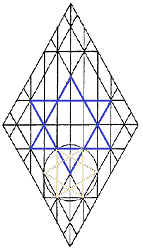

Six Points
With each of the stars of the
Seven Churches of Asia, there is a measurement and focus that
invokes the Shield of David. The Shepherd King doesn't forsake the flock as it forages the fields of Earth.
This
particular location of the Shield on the Crown Diamond display
attends the focus of the church at
Ephesus.
The lowering of the Shield of
David depicted on the Crown Diamond display to the right is a
function of focus and measurement belonging to the star of the
church at Pergamos.
The Mogan Dawid is formed by
the intersection of ascending and descending dalets, in accordance
with the Hebrew meanings of David's name: "fervent lover;
door joining/opening unto door; heart united with heart."
The dalets of the Crown Diamond are equilateral triangles equal
to six times the mass of the tip of Adam Kadmon, the
Key of David.
In its movements upon
the Crown Diamond as determined by the particular focuses and measurements
germane to the stars of the Churches of Asia. These are movements of the Spirit in Mashiyach as it searches the
hearts of men.
|